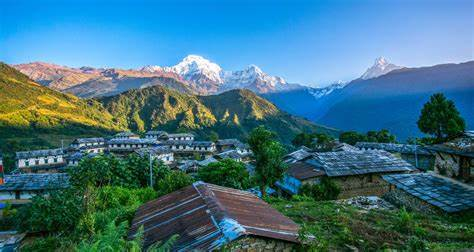
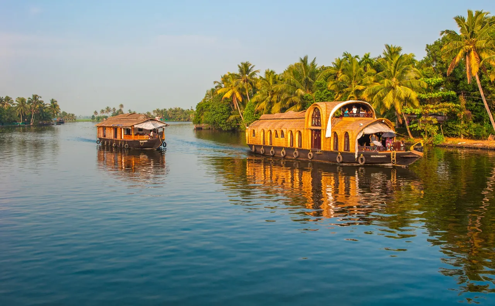

"Best Places to Visit"
List
- Ganga River
- Himalayan
- Kerala Houseboats
Ganga River
The Ganga River, revered as the holiest river in India, flows through the northern plains, providing life and sustenance to millions. It originates from the Gangotri Glacier in the Himalayas and traverses 2,525 kilometers, enriching the spiritual and cultural lives of the communities along its banks, including the sacred city of Varanasi.

The Himalayas, the world's highest mountain range, stretch across five countries including India. They boast majestic peaks like Mount Everest and Kanchenjunga, and serve as the source of major rivers such as the Ganga and Yamuna. This mountain range is not only a natural wonder but also a spiritual haven, attracting trekkers, pilgrims, and nature enthusiasts
 Himalayan
Kerala Houseboats, locally known as kettuvallams, offer a unique way to experience the serene backwaters of Kerala. These traditional boats, once used for transporting rice and spices, have been converted into luxurious floating cottages. They provide a tranquil and scenic journey through lush landscapes, coconut groves, and vibrant villages, making them a popular tourist attraction.
